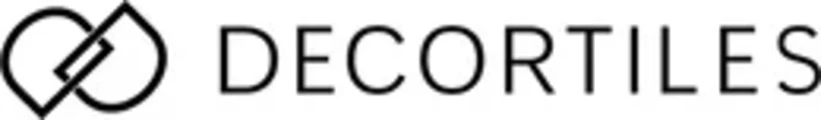
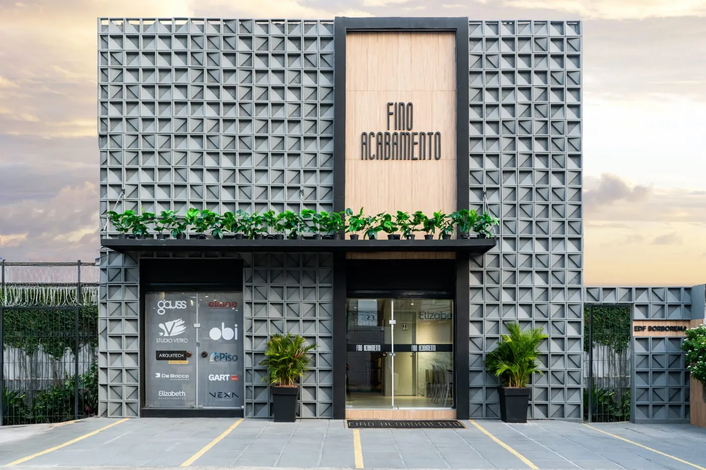
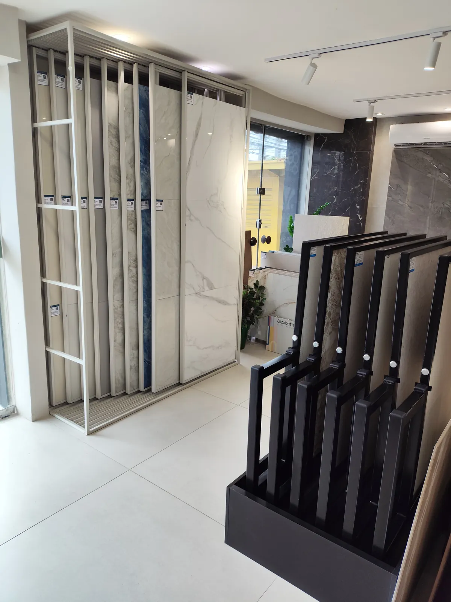
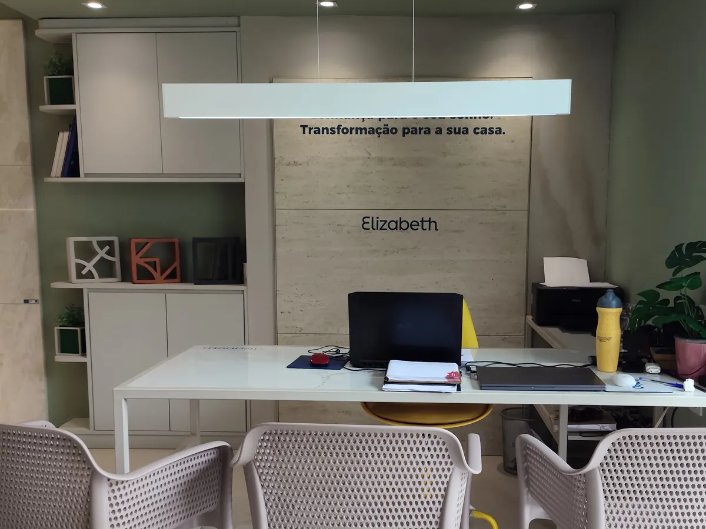

Curadoria especializada
Apoio para escolher o porcelanato certo para cada ambiente, considerando estilo, uso, formato e aplicação.
Escolha entre porcelanatos Elizabeth, Eliane e Decortiles com apoio de quem conhece formato, tonalidade e aplicação. Consulte disponibilidade e prazo pelo WhatsApp antes de fechar o pedido.
Marcas selecionadas para obras que pedem acabamento de alto padrão

Loja especializada, com showroom em Recife e equipe que acompanha a escolha do começo ao fim.
Apoio para escolher o porcelanato certo para cada ambiente, considerando estilo, uso, formato e aplicação.
A equipe verifica disponibilidade, tonalidade e prazo antes de avançar com o orçamento.
Envie planta, projeto ou medida aproximada e receba orientação de quantidade para a sua obra.
Atendimento consultivo em Recife, próximo ao Shopping Recife, com estacionamento próprio.
Opções para salas, cozinhas, banheiros, varandas, áreas externas e ambientes integrados. Toda escolha passa por consulta de disponibilidade e prazo.
Nenhum modelo neste estilo por enquanto. Fale com a equipe: o estoque muda toda semana.
A Fino Acabamento consulta disponibilidade, tonalidade e prazo antes de fechar o pedido. Quando o produto está em estoque próprio, a retirada ou a entrega acontece com mais agilidade, conforme pagamento e logística.
Opções selecionadas disponíveis para retirada ou entrega rápida, sem esperar a fábrica.
Você sabe o que está disponível e qual o prazo antes de fechar o pedido.
Mais previsibilidade sobre chegada, reposição e disponibilidade de produto.
Pode ser planta, medida aproximada, foto do ambiente ou referência de produto.
A equipe verifica modelos, formatos, estoque, prazo e possibilidades para o seu ambiente.
Você recebe orientação, orçamento e disponibilidade antes de decidir.
Esta página é para quem está em fase de obra, reforma ou acabamento e precisa escolher porcelanato com segurança, sem perder tempo com opções fora do perfil do projeto.



Visite a Fino Acabamento em Boa Viagem e veja opções de porcelanato com atendimento especializado. Estamos próximos ao Shopping Recife, em uma região de fácil acesso e com estacionamento.
Temos opções em estoque próprio. A disponibilidade varia conforme modelo, formato e tonalidade. Consulte pelo WhatsApp.
Sim. Atendemos Recife, Região Metropolitana, Litoral Sul e outras cidades de Pernambuco, conforme disponibilidade e logística.
A equipe ajuda no cálculo a partir da metragem, da planta ou do projeto. Basta enviar o que você tiver em mãos.
Sim. Há procura por formatos como 84x84, 90x90, 100x100 e 120x120, conforme disponibilidade.
O orçamento depende do modelo, da metragem, da disponibilidade e do prazo. A equipe consulta as opções e retorna com as condições.
Sim, a loja tem outras linhas. Esta página é exclusiva para consulta de porcelanatos.
Envie sua metragem, a cidade da obra e o estilo desejado. A equipe da Fino Acabamento consulta as opções disponíveis e retorna pelo WhatsApp.